회원가입 문구, 어느 쪽이 더 잘 될까요?
가상 영화 서비스 MovieLoop의 회원가입 화면 문구 두 가지를 A/B 테스트로 비교해요. AI로 페이지를 만들고, 네트리파이와 버셀에 각각 배포한 다음, GA4로 A안과 B안 결과를 셀 준비까지 해요.
교육 개요
| 교육 목표 | 방문자를 A안과 B안으로 나누는 페이지를 AI로 만들어 배포하고, GA4에서 A·B 데이터가 따로 쌓이는지 확인한다. |
|---|---|
| 진행 방식 | 세션 1은 설명, 세션 2~3은 각자 실습이에요. |
| 수업이 끝나면 | ① GA4가 A/B 테스트에서 맡는 일을 말한다 ② A/B 페이지를 두 플랫폼에 배포한다 ③ GA4 보고서에서 A안·B안을 나눠 본다 |
GA4 메뉴 이름은 자주 바뀌어요. 화면이 다르면 참고 자료의 공식 도움말을 확인해요.
수업 전 준비
- Google 계정: GA4에 쓸 계정이에요. 회사 계정으로 여러 GA 계정을 관리하고 있다면, 실습용 계정이 따로 있는지 확인해 두세요.
- GitHub·Netlify·Vercel 계정: 모두 무료예요. 로그인은 수업 전에 본인이 직접 해 두세요.
- 실습 파일: AI로 만들기 어려우면 아래 강사 예시를 내려받아 써요. 측정 ID 자리만 바꾸면 돼요.
A/B 테스트와 GA4
무엇을 나누고, 무엇을 세는지부터 잡아요.
1-1. A/B 테스트란?
A/B 테스트는 방문자를 무작위로 둘로 나눠 서로 다른 화면(A안·B안)을 보여 주고, 어느 쪽이 목표 행동(가입, 클릭)을 더 많이 만드는지 비교하는 방법이에요.
넷플릭스는 가입 흐름 맨 앞에서 이메일을 먼저 받는 안을 테스트했고, 이후 그 안을 적용했어요.
구글의 A/B 도구였던 Google Optimize는 2023년 9월 30일에 끝났어요. 그래서 일을 둘로 나눠요. 방문자를 A안·B안으로 나누는 일은 사이트 코드가, 어느 안이 나은지 세는 일은 GA4가 해요.
1-2. 오늘 만들 결과물
| 안 | 제목 | 버튼 |
|---|---|---|
| A안 | 영화와 시리즈를 무제한으로 | 회원가입 |
| B안 | 오늘 밤 볼 영화, 지금 바로 고르세요 | 지금 시작하기 |
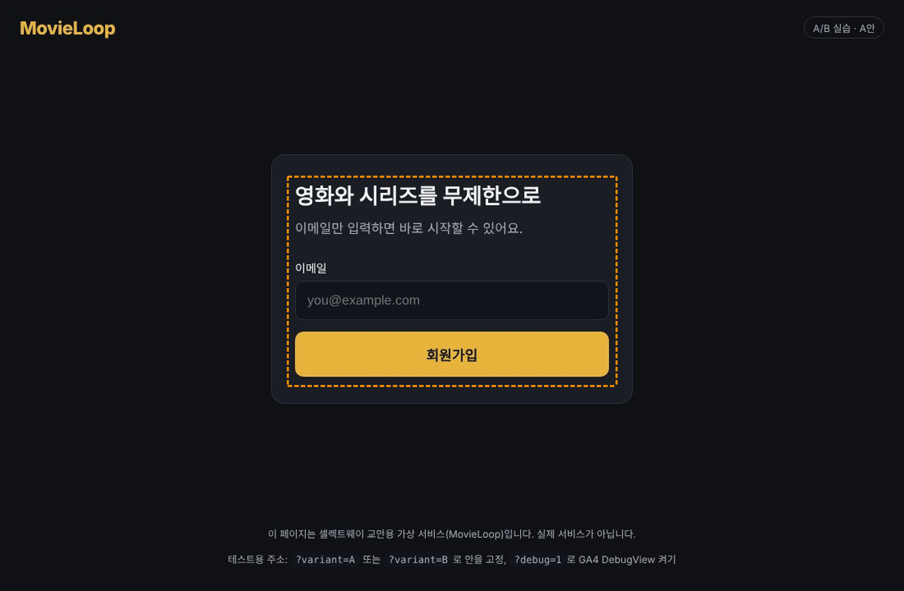
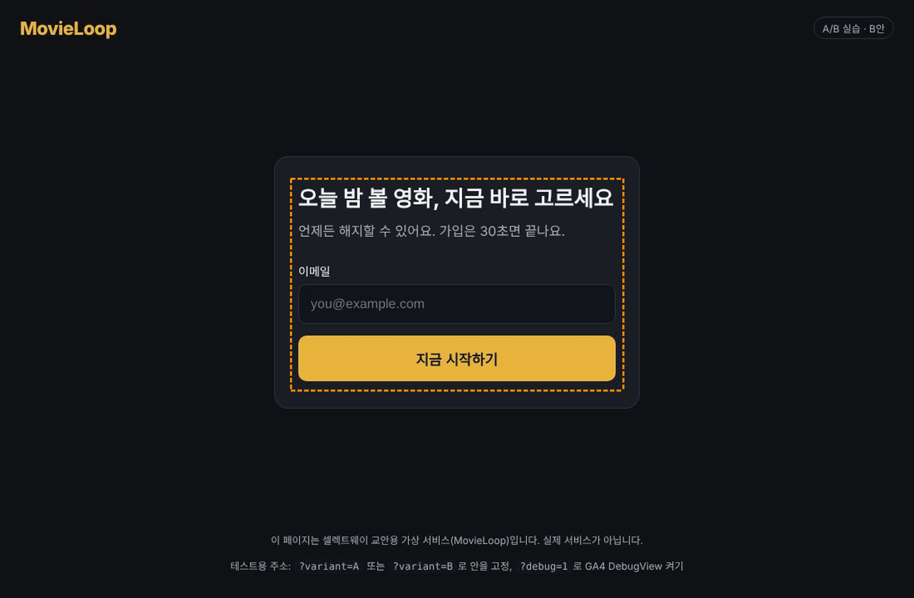
실습: A/B 페이지 만들고 배포하기
캡처의 빨간 번호는 누를 곳(순서), 주황 점선은 눈으로 확인할 곳이에요. 단계 문장의 ①②③은 바로 아래 그림의 번호와 같아요.
2-1. AI로 A/B 페이지 만들기
한 번에 다 요청하지 않고 3번에 나눠요. 화면 → A/B 나누기 → GA4 순서예요. 같은 대화창에서 이어서 물어봐요.
STEP 1. 회원가입 화면 만들기
프롬프트
가상 영화 서비스 MovieLoop의 회원가입 화면을 index.html 파일 하나로 만들어 줘. 이메일 칸과 가입 버튼만 있으면 돼. 가입 버튼을 누르면 '가입 완료' 화면만 보여 주고, 이메일은 저장하지 마.
실행 결과
답변 예시 보기프롬프트 1 결과
이메일 칸과 [가입하기] 버튼만 있는 화면(주황 점선)이 만들어져요. 답변에서 "이메일을 서버나 브라우저에 저장하지 않았다"는 설명이 있는지 봐요.
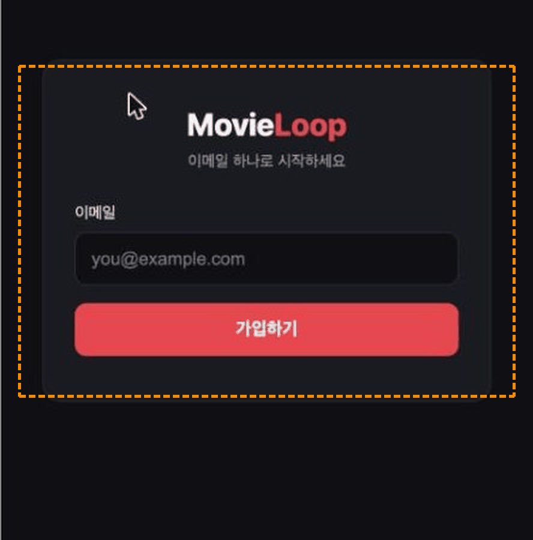
STEP 2. 방문자를 A안과 B안으로 나누기
프롬프트
방문자를 A안과 B안으로 반씩 나눠서 제목과 버튼 문구를 다르게 보여 줘. A안은 '영화와 시리즈를 무제한으로'와 '회원가입', B안은 '오늘 밤 볼 영화, 지금 바로 고르세요'와 '지금 시작하기'야. 같은 사람은 다시 와도 같은 안을 보게 해 줘.
실행 결과
답변 예시 보기프롬프트 2 결과
A안·B안 문구 표와 동작 설명이 나와요(주황 점선). 비판적 검토의 첫 줄도 꼭 읽어요. 여기서 "같은 사람"은 "같은 브라우저"라는 뜻이에요. 다른 기기나 시크릿 창으로 오면 다시 나눠져요.
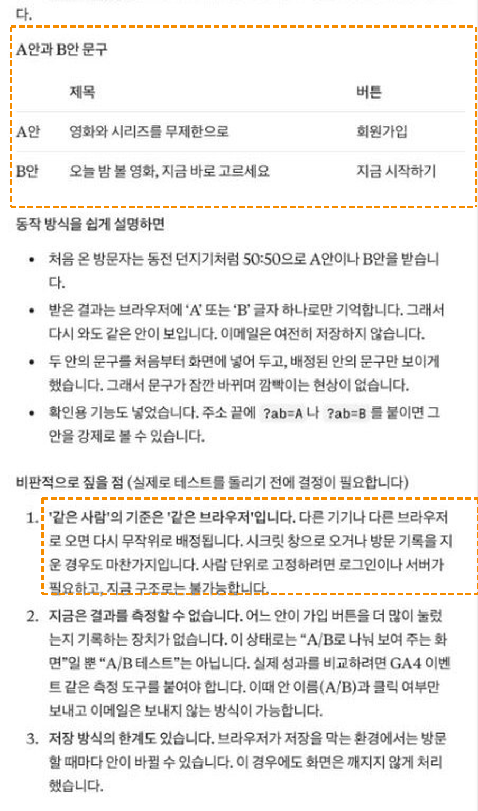
STEP 3. GA4로 결과를 세는 코드 넣기
프롬프트
GA4로 A안과 B안 결과를 세고 싶어. 내 측정 ID는 G-XXXXXXXXXX야. 어떤 이벤트를 보낼지 정해서 코드에 넣어 주고, 이메일 값은 GA4로 보내지 마. GA4 화면에서 할 일도 알려 줘.
실행 결과
답변 예시 보기프롬프트 3 결과
AI가 보낼 이벤트를 표로 정리하고, GA4 화면에서 할 일(맞춤 측정기준 등록, sign_up을 주요 이벤트로 표시)을 알려줘요(주황 점선). 측정 ID 자리는 2-2에서 만든 내 측정 ID로 바꿔요.
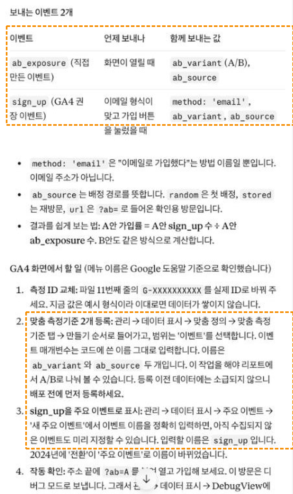
위 답변은
ab_exposure, sign_up을 보냈어요. 강사 예시 파일은 experiment_view, signup_start, sign_up을 보내요. 이 교안의 GA4 화면은 강사 예시 파일 기준이에요. 내 코드의 이름이 다르면 3-1에서 내 코드에 있는 이름으로 등록해요.확인할 점
- 파일을 브라우저로 열고 새로고침했을 때 A안 또는 B안 문구가 보이는지
- 이메일을 넣고 버튼을 누르면 "가입 완료" 화면이 나오는지
- 코드의
gtag(줄에 이메일 값이 들어가지 않았는지 - 프롬프트에 없는 기능(비밀번호 칸, 서버 저장 등)이 추가되지 않았는지
2-2. GA4 측정 ID 만들기
GA4에서 내 사이트의 데이터를 받을 자리(속성)를 만들고, 사이트에 넣을 번호(측정 ID)를 받아요.
GA4는 마지막으로 본 속성으로 열려요. 확인하지 않고 만들면 다른 회사 계정 안에 속성이 생길 수 있어요. 잘못 만들었다면 [관리] → [속성 세부정보] → [속성 이동]으로 다른 계정으로 옮길 수 있어요.
STEP 1. 속성 만들기
ab-practice-netlify), 보고 시간대 [대한민국], 통화 [대한민국 원 (₩)](주황 점선)을 넣고 [다음](①)을 눌러요.
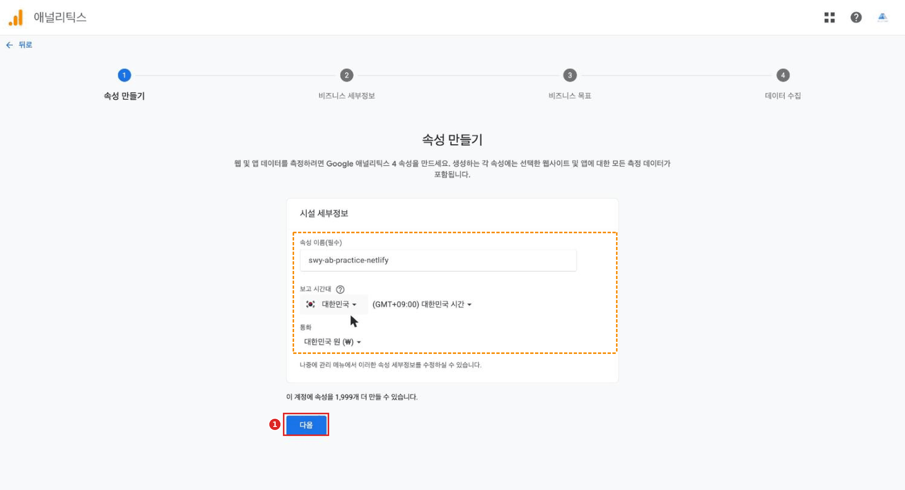
STEP 2. 웹 스트림 만들기
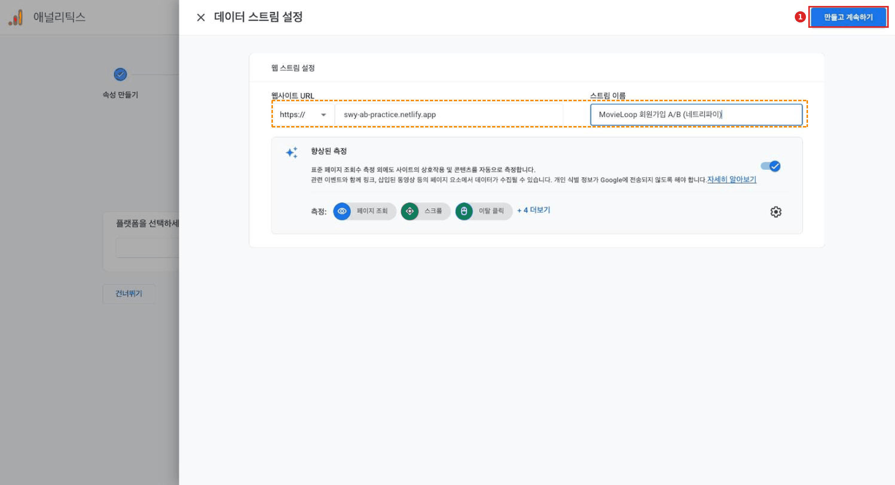
STEP 3. 측정 ID 복사하기
만들어진 웹 스트림을 열면 G-로 시작하는 측정 ID(주황 점선)가 보여요. 오른쪽 복사 아이콘(①)으로 복사해 둬요.
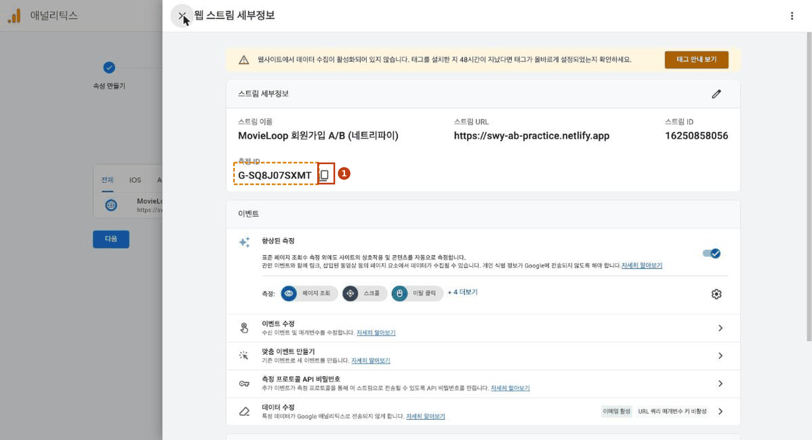
네트리파이 배포본과 버셀 배포본의 데이터를 따로 보려고 속성을 2개 만들어요(예:
ab-practice-netlify, ab-practice-vercel). 그러면 측정 ID도 2개가 생겨요.2-3. 측정 ID 넣고 코드 읽기
이번 실습에는 새로운 문법이 몇 가지 있으니 먼저 설명할게요.
| 코드 | 뜻 |
|---|---|
localStorage.setItem(키, 값) | 브라우저에 작은 메모를 저장해요. 같은 브라우저로 다시 오면 getItem(키)로 꺼내 봐요. 같은 방문자에게 같은 안을 보여 주는 데 써요. |
Math.random() < 0.5 ? 'A' : 'B' | 0~1 사이 무작위 숫자를 뽑아 0.5보다 작으면 A, 아니면 B예요. 방문자를 반반 나눠요. |
new URLSearchParams(location.search) | 주소 뒤 ?variant=A 같은 값을 읽어요. |
gtag('set', 'user_properties', …) | 이 방문자가 A인지 B인지 GA4에 "사용자 속성"으로 기록해요. |
gtag('event', 이름, {…}) | GA4에 이벤트(일어난 일)를 보내요. 중괄호 안은 함께 보내는 정보(매개변수)예요. |
STEP 1. 측정 ID 바꿔 넣기
파일에서 G-XXXXXXXXXX 자리를 2-2에서 복사한 측정 ID로 바꿔요. 네트리파이용 파일과 버셀용 파일은 측정 ID만 다르게 해서 두 개로 저장해요.
STEP 2. GA4로 보내는 줄 읽기
강사 예시 파일에서 GA4로 보내는 줄은 아래 4줄이에요. 이메일 값이 들어가 있지 않은지 함께 봐요.
gtag('set', 'user_properties', { ab_variant: v });
gtag('event', 'experiment_view', { experiment_id: 'signup_copy_1', variant: v });
gtag('event', 'signup_start', { variant: v }); // 이메일 칸을 처음 눌렀을 때
gtag('event', 'sign_up', { method: 'email', variant: v }); // 가입 버튼을 눌렀을 때2-4. 네트리파이에 배포하기
#1편 3-1에서 끌어다 놓아 배포했던 것 기억하시나요? 같은 방법으로 네트리파이용 index.html을 올려요.
STEP 1. 끌어다 놓기
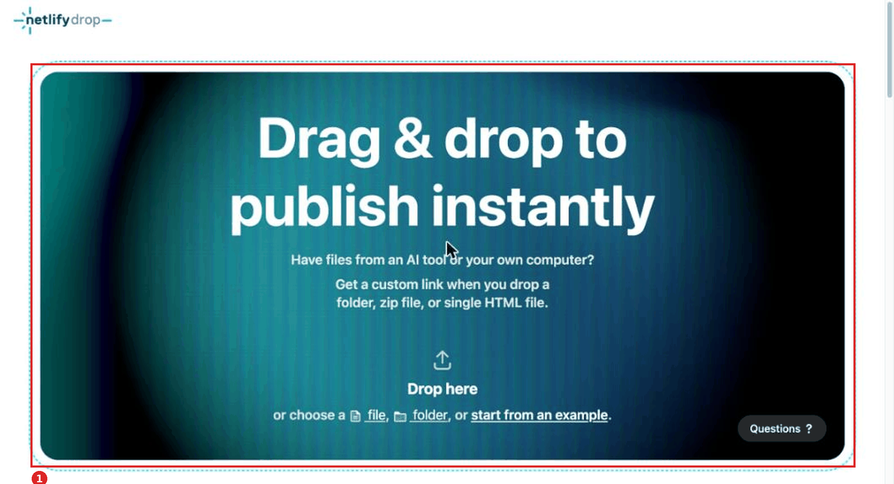
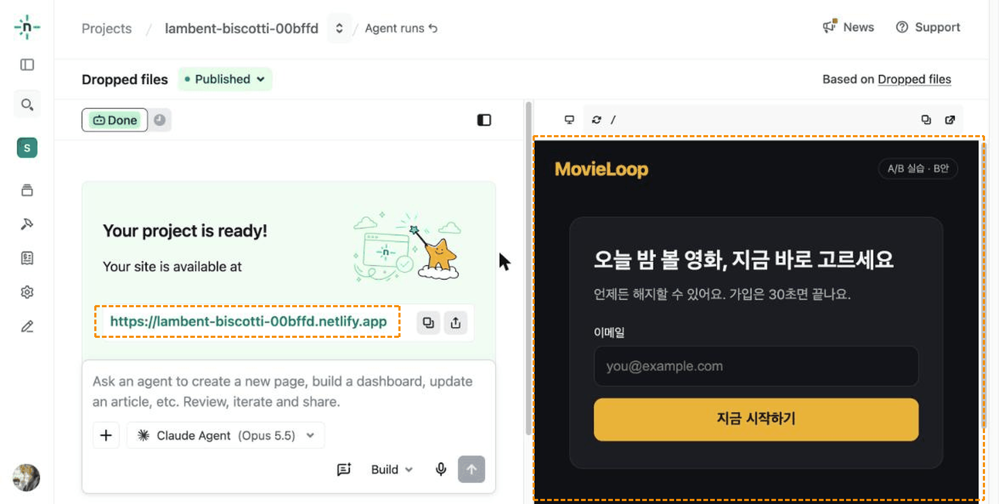
로그인하지 않고 올렸다면1시간 뒤 사라지는 임시 사이트
남은 시간(주황 점선)이 지나면 사이트가 사라져요. [Claim this site](주황 점선)로 내 계정에 붙이거나, 로그인한 뒤 다시 올려요.
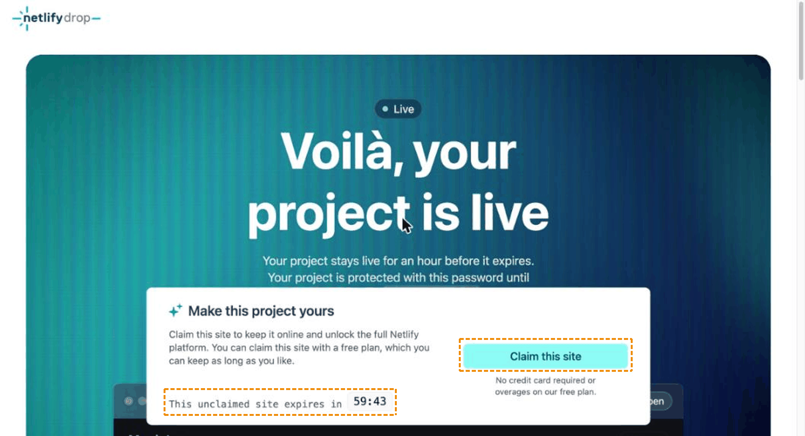
2-5. 버셀에 배포하기
버셀은 끌어다 놓는 화면 대신 GitHub 저장소를 연결해서 배포해요.
STEP 1. GitHub 저장소 만들기
GitHub에서 [New repository]를 누르고, 저장소 이름(①)과 설명(②)을 넣어요. 공개 범위(주황 점선)는 실습용 가상 페이지라 [Public]으로 했어요. 실제 업무 자료가 들어가면 [Private]를 골라요.
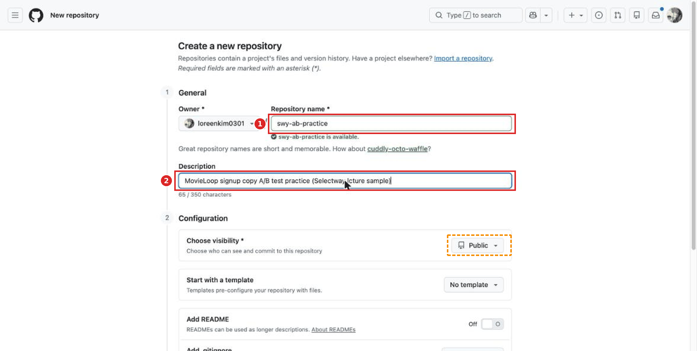
STEP 2. 파일 올리기
저장소 첫 화면의 [uploading an existing file]을 누르고, 버셀용 index.html을 끌어다 놓는 칸(①)에 넣어요. 커밋 메시지(②)를 적고 [Commit changes]를 눌러요.
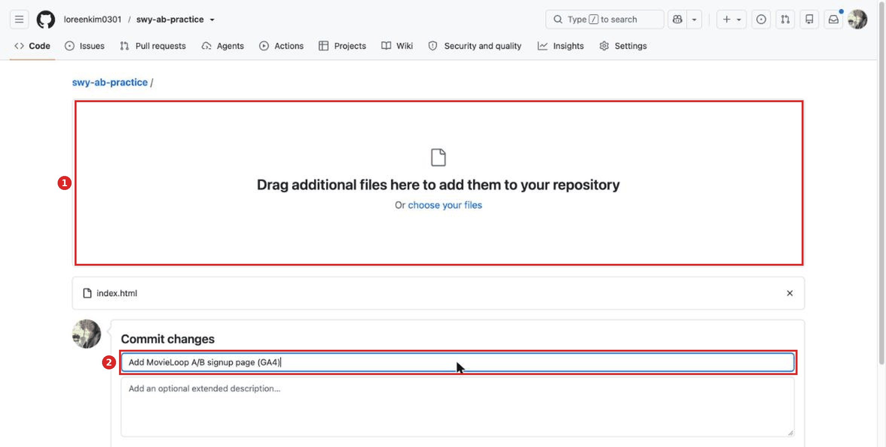
STEP 3. 버셀에서 가져오기
vercel.com/new의 [Import Git Repository]에서 방금 만든 저장소의 [Import](①)를 눌러요.
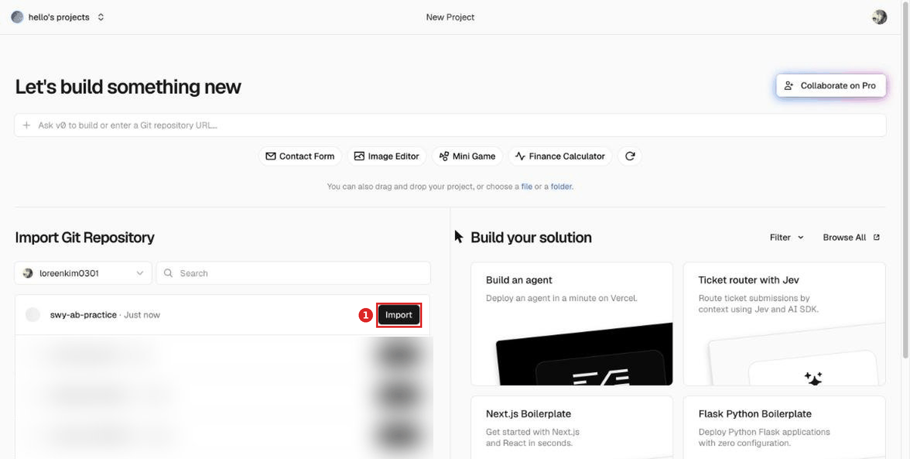
STEP 4. 배포하기
[Application Preset]이 [Other](주황 점선)인지 보고, 나머지는 그대로 둔 채 [Deploy](①)를 눌러요. 몇 초 뒤 배포가 끝나요. 이후에는 GitHub에 올릴 때마다 자동으로 다시 배포돼요.
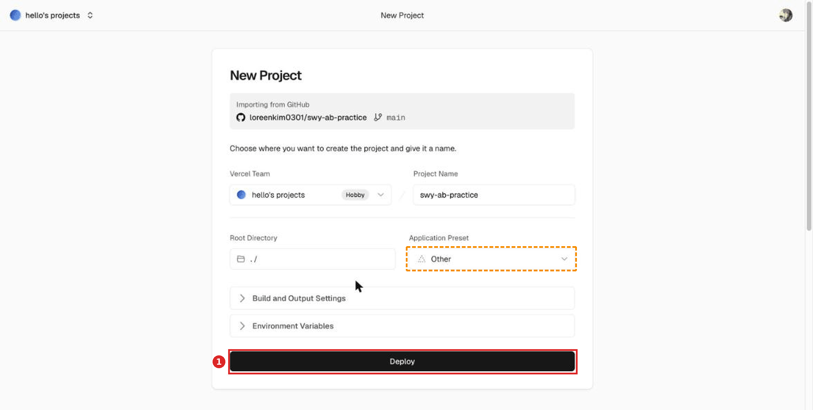
"Deployed to Production"(주황 점선)이 나오면 [Visit](①)을 눌러 페이지를 열어 봐요.
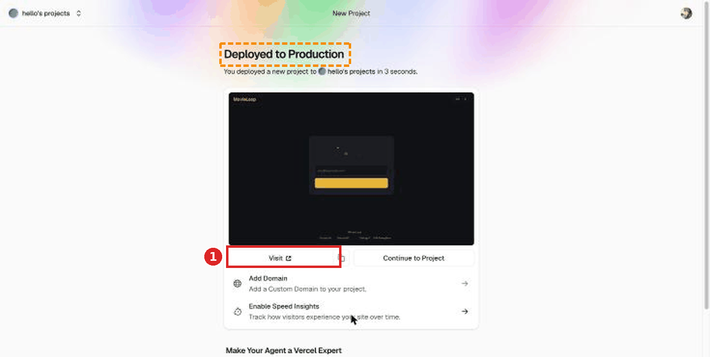
확인할 점
- 네트리파이 주소와 버셀 주소가 모두 열리는지
- 주소 뒤에
?variant=A,?variant=B를 붙이면 문구가 바뀌는지(AI가 만든 파일은?ab=A처럼 이름이 다를 수 있어요) - 두 파일에 서로 다른 측정 ID가 들어갔는지
실습: GA4로 A·B 결과 세기
코드가 보낸 A·B 정보를 GA4 보고서에서 나눠 볼 수 있게 등록하고, 실제로 들어오는지 확인해요.
3-1. 맞춤 측정기준 등록하기
코드가 보내는 variant, ab_variant 값을 GA4 보고서에서 쓰려면 "맞춤 측정기준"으로 등록해야 해요. 속성 2개에 모두 등록해요.
STEP 1. 이벤트 범위 측정기준
[관리] → [데이터 표시] → [맞춤 정의] → [맞춤 측정기준 만들기]를 눌러요. 이름(①)에 AB 변형 이벤트를 넣고, 범위는 [이벤트](주황 점선)로 둬요. 이벤트 매개변수(②)에 variant를 넣고 [저장](③)을 눌러요. 이름에는 괄호를 쓸 수 없어요.
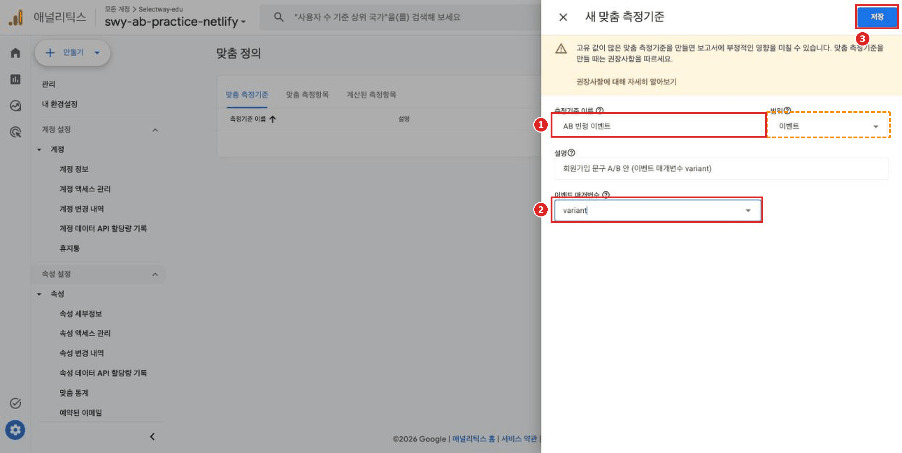
STEP 2. 사용자 범위 측정기준
같은 방법으로 이름 AB 변형, 범위 [사용자], 사용자 속성 ab_variant를 등록해요. 목록에 2줄(주황 점선)이 보이면 끝이에요.
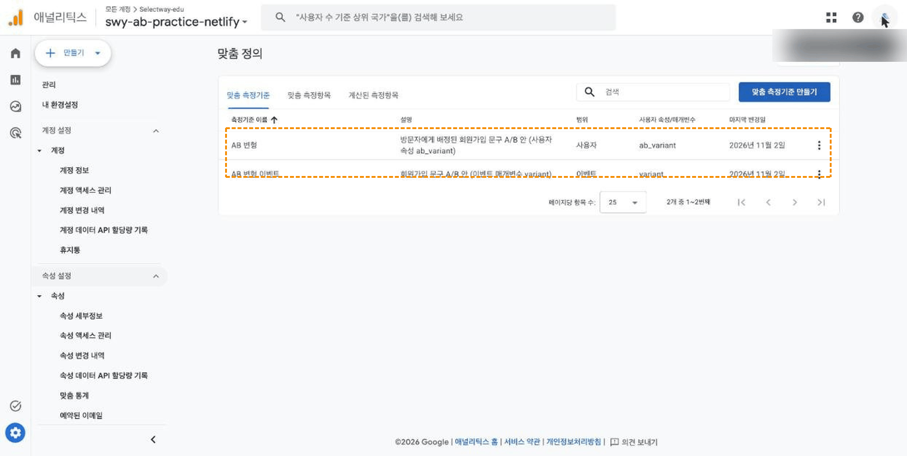
맞춤 측정기준은 데이터가 들어오고 24~48시간이 지나야 일반 보고서와 탐색 보고서에서 쓸 수 있어요.
3-2. 실시간 보고서로 확인하기
STEP 1. 가입해 보기
배포된 주소에서 가상 이메일을 넣고 가입 버튼을 눌러요. "가입 완료!"(주황 점선)가 나오면 돼요. 시크릿 창을 여러 번 열면 A와 B가 번갈아 나오는 것도 볼 수 있어요.
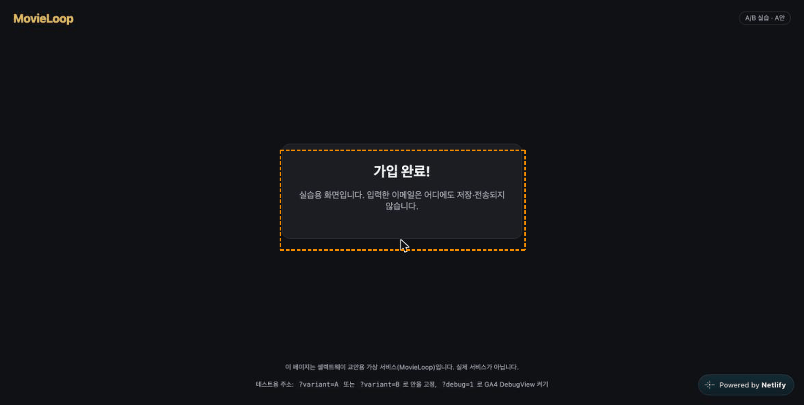
STEP 2. 실시간 개요 보기
GA4 [보고서] → [실시간 개요]를 아래로 내려요. [이벤트 이름별 이벤트 수]에 experiment_view, signup_start가, [사용자 속성별 활성 사용자]에 AB 변형이 보여요(주황 점선).
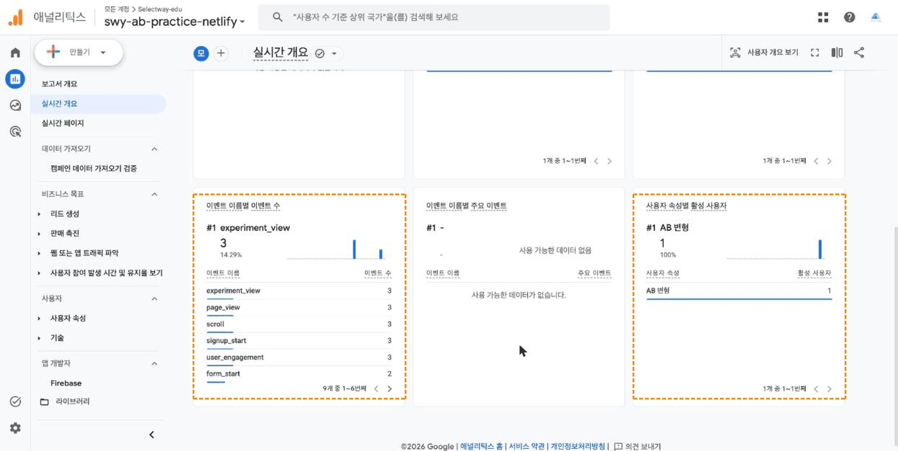
3-3. A안과 B안 비교하기
STEP 1. sign_up을 주요 이벤트로 표시하기
[관리] → [데이터 표시] → [주요 이벤트] → [새 주요 이벤트]를 누르고 sign_up을 정확히 입력해요. 이벤트가 아직 들어오지 않았어도 미리 지정할 수 있어요. "주요 이벤트"는 예전 이름 "전환"이에요.
STEP 2. 탐색 보고서로 비교하기
AB 변형을 추가해 [행]에 놓아요.확인할 점
- GA4 속성 2개의 실시간 개요에 각각 이벤트와 AB 변형이 보이는지
- 맞춤 측정기준 2개가 속성마다 등록됐는지
sign_up을 주요 이벤트로 표시했는지
- GA4는 두 안의 차이가 우연인지(통계적 유의성) 계산해 주지 않아요. 방문자가 충분히 모일 때까지 기다린 뒤 외부 유의성 계산기로 확인해요.
- 한 번에 한 가지만 바꿔요. 문구와 색을 동시에 바꾸면 무엇 때문에 달라졌는지 알 수 없어요.
- 같은 사람이라도 다른 기기나 시크릿 창으로 오면 새 방문자로 다시 나눠져요.
- 실험이 끝나면 진 안의 코드를 지우고 이긴 안만 남겨요.
- 네트리파이·버셀·GitHub 로그인은 본인이 직접 해요. AI 도구에 비밀번호를 맡기지 않아요.
- 공개(Public) 저장소의 코드는 누구나 볼 수 있어요. API 키나 개인정보가 들어간 파일은 올리지 않아요.
- 측정 ID(G-로 시작)는 사이트 소스에 그대로 보이는 공개 값이라 숨기지 않아도 돼요.
(선택) 버셀에서 깜빡임 없이 나누기더 알아보기
이 실습 방식은 페이지가 열린 뒤 글자를 바꾸므로 잠깐 원래 글자가 보일 수 있어요. 버셀에서는 미들웨어가 쿠키로 방문자를 나눠 A 페이지나 B 페이지로 보내면 이 문제가 없어요. 나누는 비율을 Global Config에 두면 다시 배포하지 않고도 바꿀 수 있어요. 측정 방법은 3-1~3-3과 같아요.
참고 자료
- GA4 메뉴의 한국어 이름은 2026년 11월 2일 화면 기준이에요. 화면이 바뀌면 영어 이름(Admin → Data display → Custom definitions)으로 찾아요.